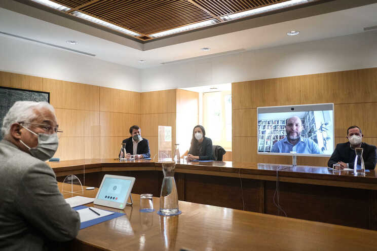

Tlm:+351 252 291 700 | E-mail: noticias@esmad.pt
Livre quer sentar à mesa todos os partidos da esquerda

O Livre foi recebido, esta terça-feira de manhã, pelo primeiro-ministro indigitado, António Costa, para debater os temas que devem marcar o arranque da próxima legislatura.
Durante a reunião, foram abordados temas como o trabalho, segurança social, ensino superior e pandemia. No final, o porta-voz do Livre, Pedro Mendonça, apelou a uma convergência pluralista entre todos os partidos da Esquerda, incluindo o PAN. Para isso, o Livre enviou convites aos partidos para procurar convergências alargadas.
É preciso um "modelo de desenvolvimento para o país que junte contribuições além do governo, além do livre, dos outros partidos de esquerda e dos partidos ecologistas e progressistas", disse Pedro Mendonça em declarações aos jornalistas.
O Livre não está disponível para "deixar o país desperdiçar oportunidades de desenvolvimento de médio e longo prazo", disse o porta-voz do partido. A aplicação dos fundos do PRR são uma grande oportunidade para o "desenvolvimento do país", acrescentou o porta-voz.
Pedro Mendonça relembrou que a maioria absoluta não era o cenário desejado pelo Livre e espera uma abertura para entendimentos por parte de António Costa, que deve ser extensível a toda a Esquerda. "A abertura para o diálogo está plasmada no convite que nos foi feito", disse. Apesar da maioria absoluta, o PS "tenderá a atender com mais facilidade, pressionado por isso", se a esquerda conseguir encontrar pontos em comum para negociar.
O Livre faz um bom balanço daquela que foi uma "boa primeira reunião", mas a "convergência tem de ser mais alargada". Temas como a semana de trabalho de quatro dias e testes piloto do Rendimento Básico Incondicional também foram abordados. Relativamente à pandemia, o Livre não adianta qualquer possível medida sem ouvir os especialistas. "Os cientistas não têm decisão política, mas são fulcrais para qualquer decisão política", afirmou Pedro Mendonça.
O primeiro-ministro indigitado recebe esta terça-feira os partidos com assento parlamentar. A manhã foi dedicada aos pequenos partidos e o Livre foi o primeiro a ser recebido. Rui Tavares, o único deputado eleito, esteve presente à distância, mas outros membros da comitiva do Livre marcaram presença na residência oficial do primeiro-ministro.